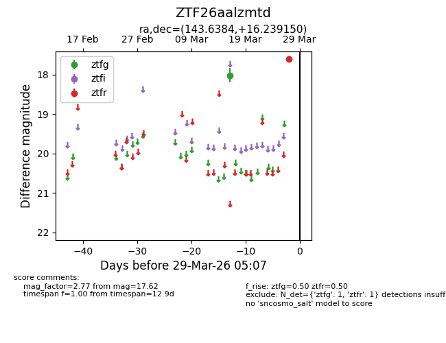
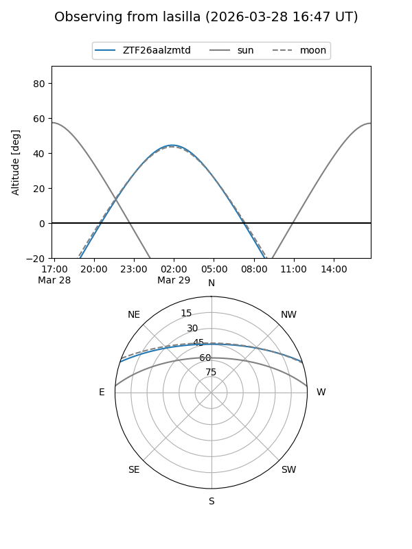
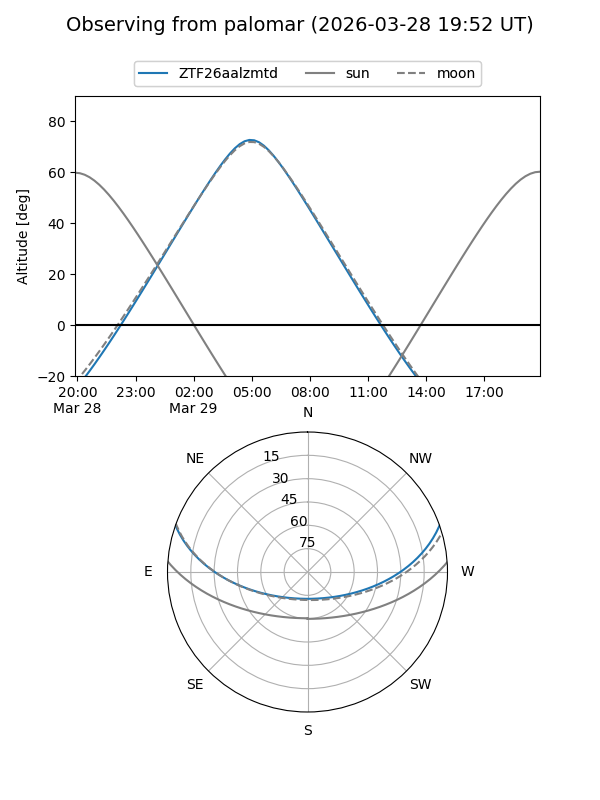

ZTF26aalzmtd
Target ZTF26aalzmtd at 2026-03-29 05:10
Aliases and brokers:
FINK: link
Lasair: link
ALeRCE: link
alt names
ZTF26aalzmtd (ztf,fink_ztf)
Coordinates:
equatorial (ra, dec) = 143.6384,+16.23915
equatorial (HMS+DMS) = 09:34:33.23,+16:14:20.94
galactic (l, b) = (215.8499,+43.28375)
Flags:
Photometry:
last ztfg=18.02, ztfr=17.62
1 ztfg, 1 ztfr detections
Lightcurve

Visibility


Additional plots